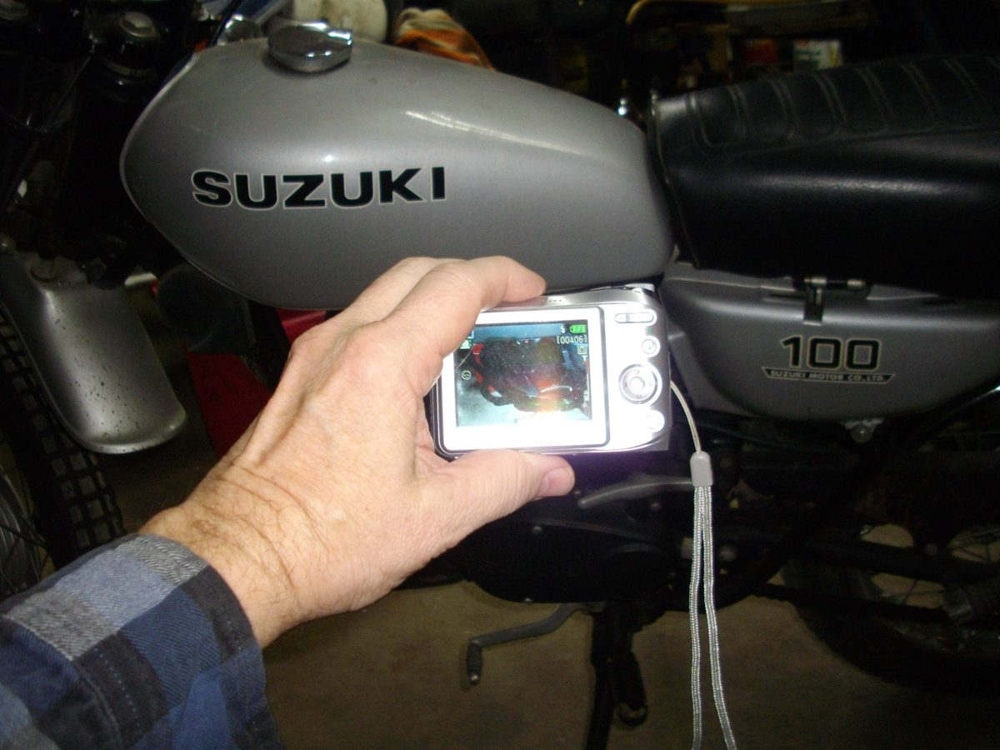
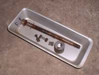
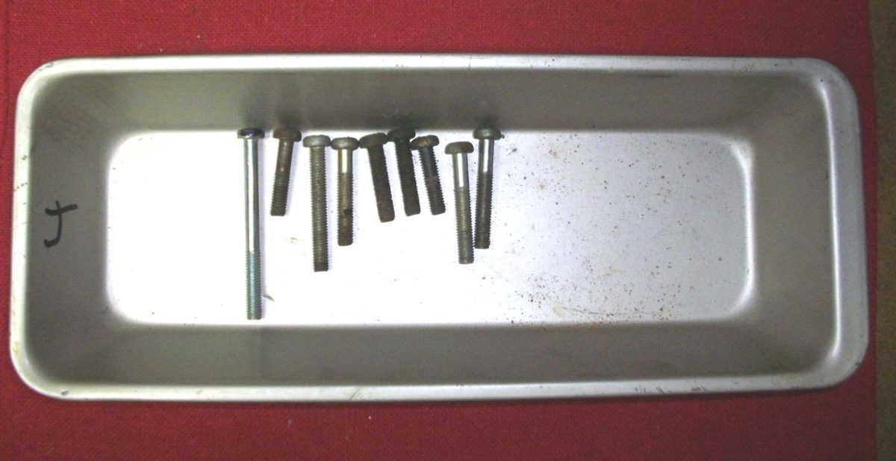
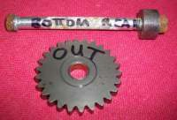
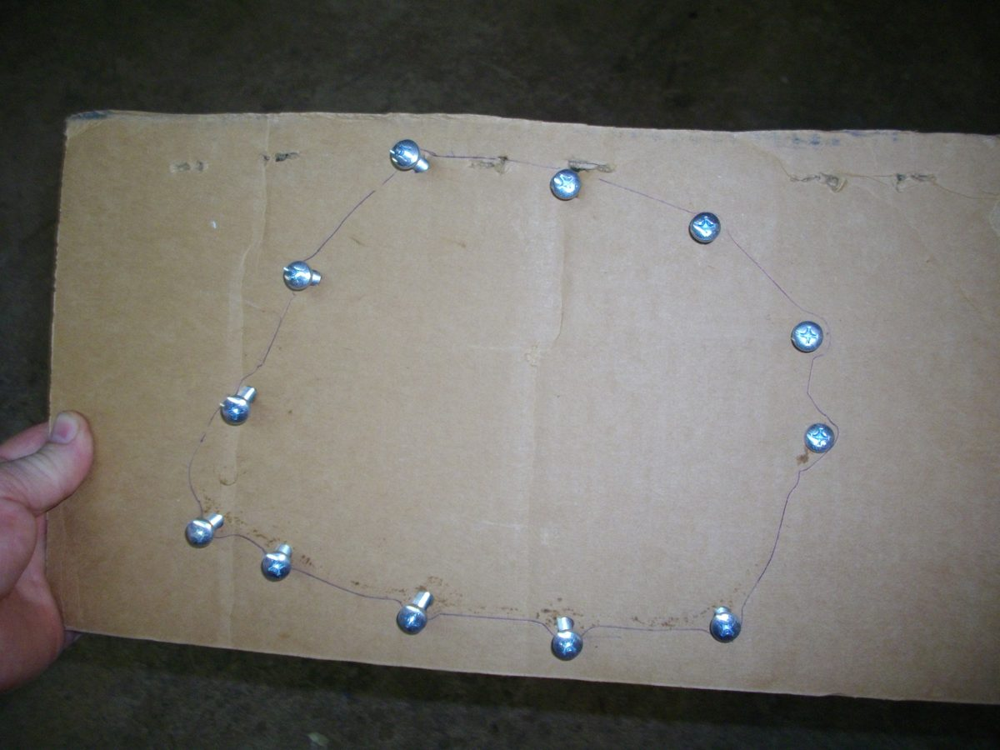
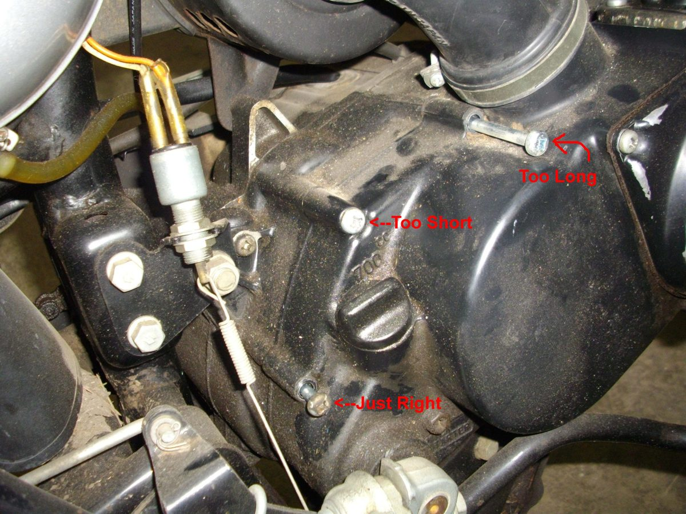
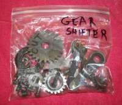

Most rebuild errors come from parts going back in the wrong place or the wrong way round. A little order saves hours.
You need
- Trays or tins, plastic freezer bags, a felt-tip marker, a camera or phone and cardboard.
Steps
- Photograph first. Take many photos as the bike comes apart: clutch plate order, wiring and cable routes. This helps even if the job waits for weeks.
- One tray per assembly. Put the bolts, nuts and washers from each group into their own tray. Do not pile them on the floor.
- Mark the parts. Write on parts with a felt-tip marker, for example "out", "rear top", "left intake" or "right exhaust". Mark push rods and valves so each goes back in the same place. Most parts can fit either way, and refitting them as they were prevents wear.
- Cover screws of different lengths. For a crankcase cover with mixed screws, use one of these: - Mark one hole and its screw with the marker, then lay the screws out in order. - Draw the hole pattern on cardboard, punch a hole for each screw and push each screw in. - If mixed up, set each screw in a hole and check how far it stands out. Most screws of the right length stand out the same height. One that stands out much more or less than the rest is the wrong screw.
- Bag it. If the job waits, put each tray in a freezer bag and write on it. This keeps oil and dust off and the screws, shims and gears together with the right parts.
- Wipe the marks later with contact cleaner on a rag.
- Check the manual. A manual can be wrong. Check marks and timing with the engine at top dead centre on compression before pulling anything apart: Diagnose methodically.
Check your work
- Every part has a tray or a bag, and every bag has a label.
If it did not fix the problem
- A rebuilt engine that will not start: Rebuilt engine will not start or has no compression.